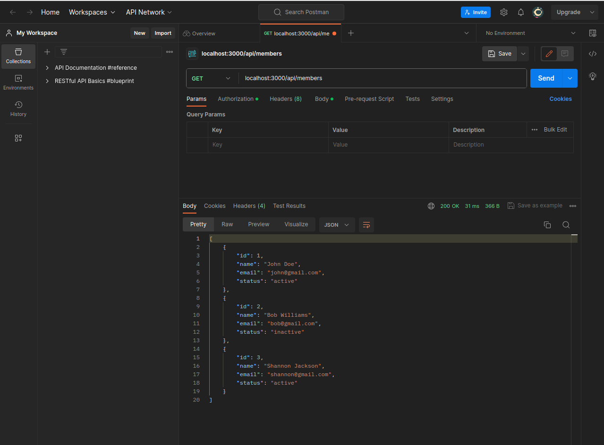
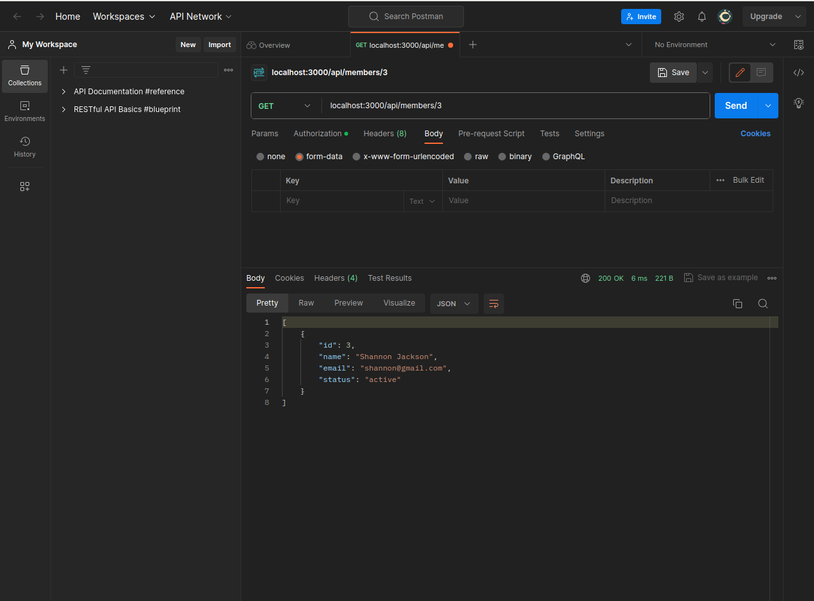
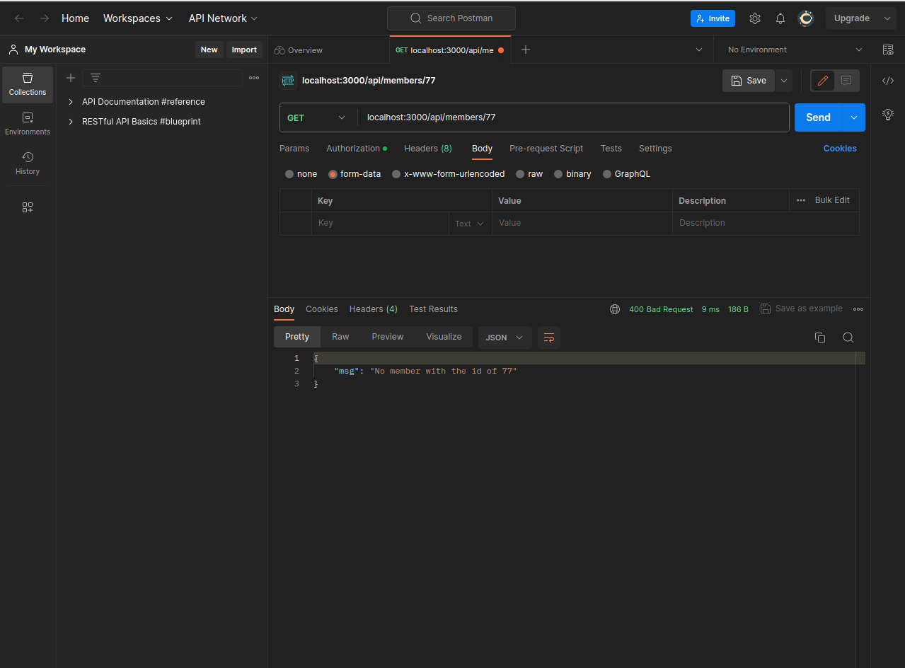
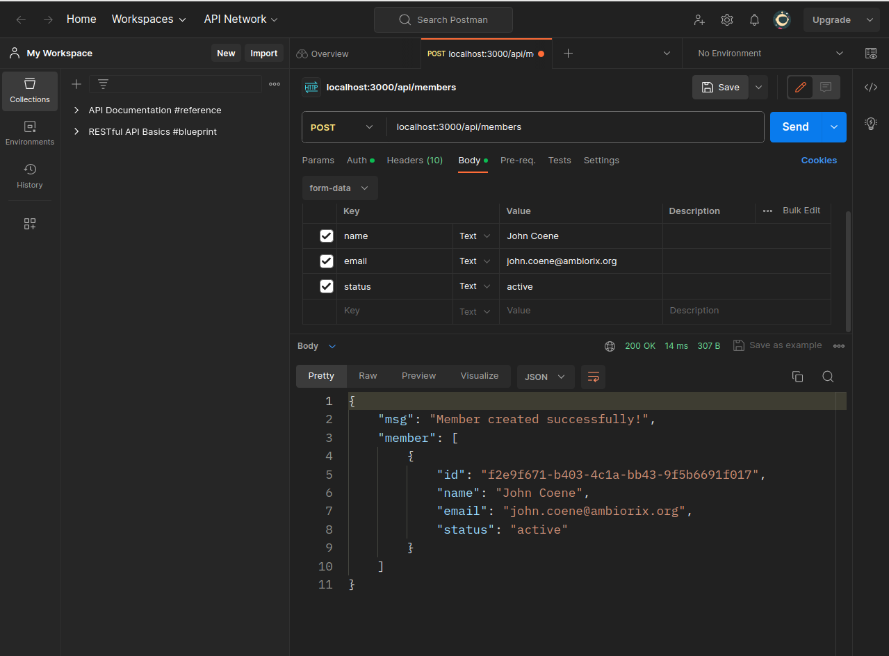
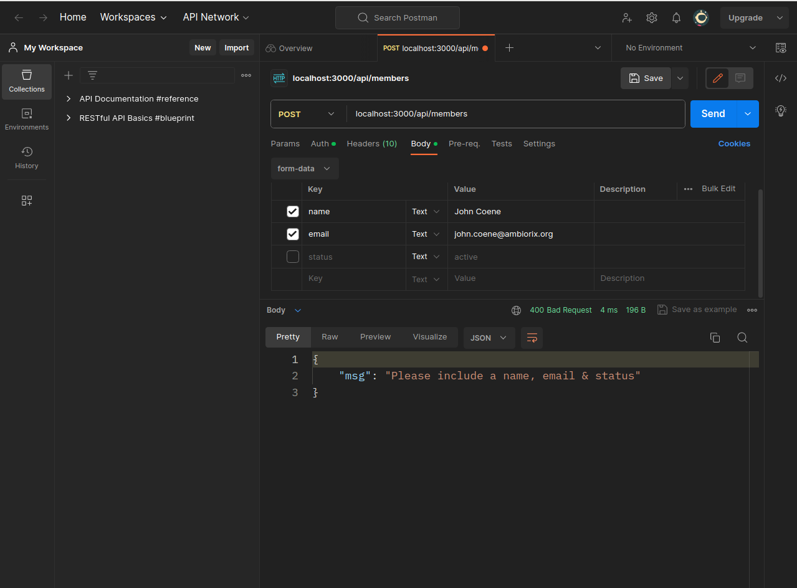
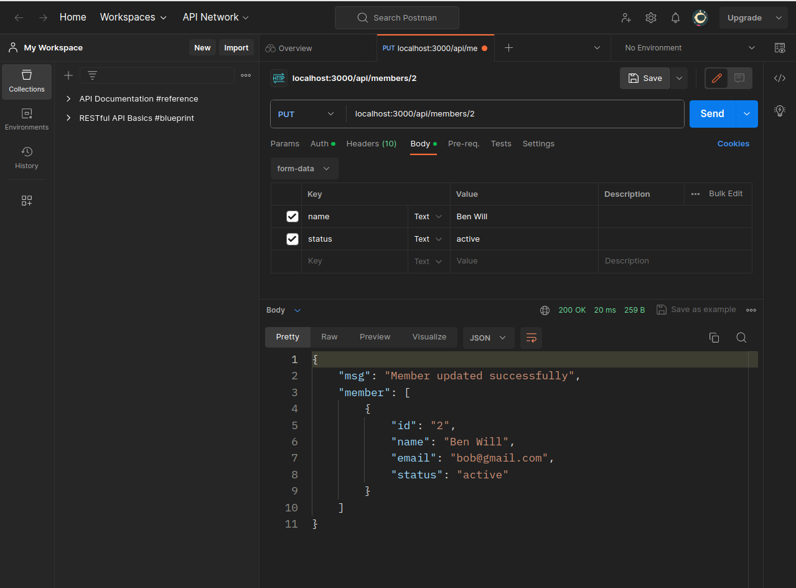
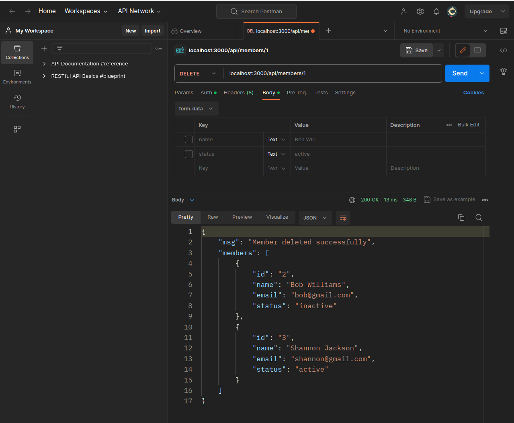

Run app
cdinto the04_simple_json_api/dir:cd 04_simple_json_api/Fire up R:
RRestore package dependencies:
renv::restore()Once done, exit R.
server.Ris the entry point. To start the app, run this on the terminal:Rscript index.R
Explanation
This app starts a server and listens on port 3000 for connections.
It has two endpoints:
/api/members/api/members/:id
Ideally, the backend works hand-in-hand with the database. But for the sake of simplicity, let’s hardcode a list of members:
members <- data.frame(
id = as.character(1:3),
name = c("John Doe", "Bob Williams", "Shannon Jackson"),
email = c("john@gmail.com", "bob@gmail.com", "shannon@gmail.com"),
status = c("active", "inactive", "active")
)You don’t have to worry about converting members into JSON because the res$json() method does it for you.
Create a GET request to get all members:
app$get("/api/members", \(req, res) {
res$json(members)
})
Create a GET request to get a single member by id:
app$get("/api/members/:id", \(req, res) {
# get the supplied id:
member_id <- req$params$id
# filter member with that id:
found <- members |> dplyr::filter(id == member_id)
res$json(found)
})
You can also dictate how the response changes if no member is found:
# get a single member:
app$get("/api/members/:id", \(req, res) {
# get the supplied id:
member_id <- req$params$id
# filter member with that id:
found <- members |> dplyr::filter(id == member_id)
# if a member with that id was found, return the member:
if (nrow(found) > 0) {
return(res$json(found))
}
# otherwise, change response status to 400 (Bad Request)
# and provide a message:
msg <- list(msg = sprintf("No member with the id of %s", member_id))
res$set_status(400L)$json(msg)
})
A POST request to create a new member:
app$post("/api/members", \(req, res) {
# parse form-data:
body <- parse_multipart(req)
# details of the new member:
new_member <- data.frame(
id = uuid::UUIDgenerate(),
name = body$name,
email = body$email,
status = body$status
)
# save new member:
members <<- dplyr::bind_rows(members, new_member)
# respond with a message and details of the newly created member:
response <- list(
msg = "Member created successfully!",
member = new_member
)
res$json(response)
})
You can of course ensure all the details are sent (name, email & status) before creating the new member:
app$post("/api/members", \(req, res) {
# parse form-data:
body <- parse_multipart(req)
name <- body$name
email <- body$email
status <- body$status
# require all member details:
if (is.null(name) || is.null(email) || is.null(status)) {
msg <- list(msg = "Please include a name, email & status")
return(res$set_status(400L)$json(msg))
}
# details of the new member:
new_member <- data.frame(
id = uuid::UUIDgenerate(),
name = name,
email = email,
status = status
)
# save new member:
members <<- dplyr::bind_rows(members, new_member)
# respond with a message and details of the newly created member:
response <- list(
msg = "Member created successfully!",
member = new_member
)
res$json(response)
})
Create a PUT request to update a member:
app$put("/api/members/:id", \(req, res) {
# get the supplied id:
member_id <- req$params$id
# filter member with that id:
found <- members |> dplyr::filter(id == member_id)
# if a member with that id is NOT found, change response status
# and provide a message:
if (nrow(found) == 0) {
msg <- list(msg = sprintf("No member with the id of %s", member_id))
return(res$set_status(400L)$json(msg))
}
# otherwise, proceed to update member:
body <- parse_multipart(req)
# only update provided fields:
found$name <- body$name %||% found$name
found$email <- body$email %||% found$email
found$status <- body$status %||% found$status
members[members$id == found$id, ] <- found
response <- list(
msg = "Member updated successfully",
member = found
)
res$json(response)
})
Create a delete request to, well, delete a member:
app$delete("/api/members/:id", \(req, res) {
# get the supplied id:
member_id <- req$params$id
# filter member with that id:
found <- members |> dplyr::filter(id == member_id)
# if a member with that id is NOT found, change response status
# and provide a message:
if (nrow(found) == 0) {
msg <- list(msg = sprintf("No member with the id of %s", member_id))
return(res$set_status(400L)$json(msg))
}
# otherwise, proceed to delete member:
members <<- members |> dplyr::filter(id != member_id)
response <- list(
msg = "Member deleted successfully",
members = members
)
res$json(response)
})
Router
Things are getting out of hand in server.R. Take a look at ✨routers✨.